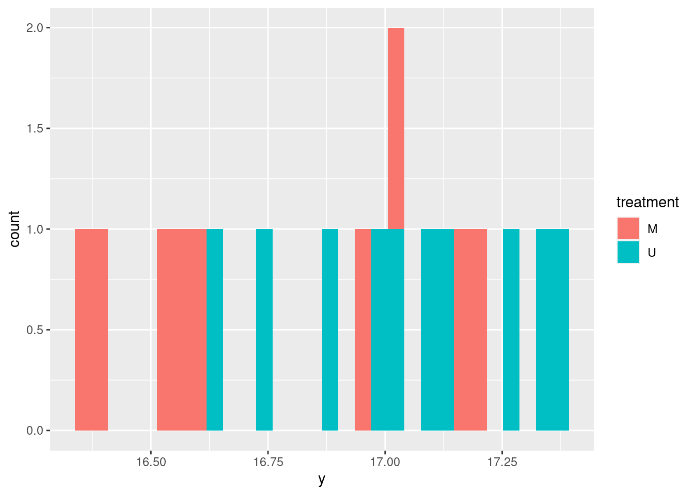

DOE
(Montgomery 2012), Chapter 2
The Portlant cement example
Loading data
# To be used in examples with each variable in a different column
cement <- read.csv("data/2 cement.csv")
# To be used in examples with all variables in one column with additional factor column
cement_factor <- read.csv("data/2 cement_factor.csv")
names(cement_factor) <- c("treatment", "y")Normality check
t test assumptions * independent populations * normally distributed * equal variance * random sampling
## `stat_bin()` using `bins = 30`. Pick better value with `binwidth`.

My take away is that the populations are too small to plot histograms (Montgomery recommends >75 observations!)
Homogeneity of variances test (Levene Test)
You want test samples to see for homogeneity of variance (homoscedasticity)
## Loading required package: carData## Levene's Test for Homogeneity of Variance (center = median)
## Df F value Pr(>F)
## group 1 0.9792 0.3363
## 17Pr > 0.05 thus there is homogeity of the variances (they do not differ significantly).
##
## Two Sample t-test
##
## data: cement$Modified and cement$Unmodified
## t = -2.1869, df = 18, p-value = 0.0422
## alternative hypothesis: true difference in means is not equal to 0
## 95 percent confidence interval:
## -0.54507339 -0.01092661
## sample estimates:
## mean of x mean of y
## 16.764 17.042P < 0.05 thus the means differ significantly The null hypothesis is rejected (and would be rejected at any level of significance of alpha > 0.0422).
Furthemore the mean difference is estimated with 95% confidence, to be between -0.55 and -0.01 (to be noted that zero is obviously not included in this interval).
Sample size calculation
# Calculate the required sample size for a certain t-test power
cohen_d <- 0.25 / 0.25 # Cohen's effect size = difference of means / sd
# A Cohen's d of 2 means that the averages changed by 2 standard deviations, which is very large.
pwr.t.test(d = cohen_d, power = 0.95)##
## Two-sample t test power calculation
##
## n = 26.9892
## d = 1
## sig.level = 0.05
## power = 0.95
## alternative = two.sided
##
## NOTE: n is number in *each* group# By comparison, calculate Cohen's d for the dataset
cohensD(x = cement$Modified, y = cement$Unmodified)## [1] 0.9780006In this example if we wanted to detect a significant difference of at least 0.25 in the means with a probability of at least 95% (Power of 0.95) we would need to use 8 (7.6) samples of each.
see also (Broc 2016) for further details on the statistical tests presented here.
t-test paired
hardness <- read.csv("data/2 hardness.csv")
t.test(x = hardness$Tip1, y = hardness$Tip2, paired = TRUE)##
## Paired t-test
##
## data: hardness$Tip1 and hardness$Tip2
## t = -0.26414, df = 9, p-value = 0.7976
## alternative hypothesis: true difference in means is not equal to 0
## 95 percent confidence interval:
## -0.9564389 0.7564389
## sample estimates:
## mean of the differences
## -0.1p > 0.05 thus the means cannot be considered different (we cannot reject the null hypothesis) The mean difference is with 95% confidence between -0.96 and 0.76.
Note that because it is paired although there are 20 measurements there are only 9 degrees of freedom (10 times the differences between the measurements, minus 1).
References
Broc, Guillaume. 2016. Stats Faciles Avec R. 1th ed. deBoeck.
Montgomery, Douglas C. 2012. Design and Analysis of Experiments. 8th ed. Wiley.